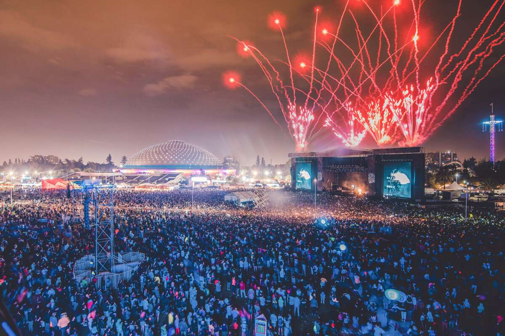
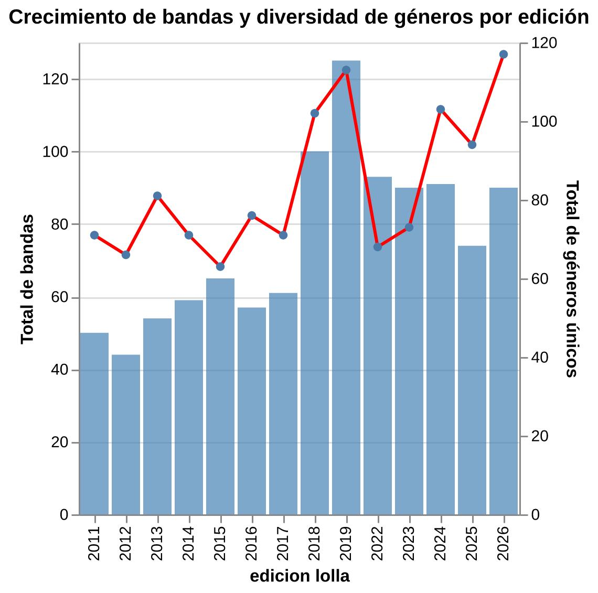

.png)

En el año 2010 la noticia de la llegada del famoso festival estadounidense Lollapalooza generó grandes expectativas en el país. Este evento nació en 1991 gracias al líder de la banda Jane's Addiction: Perry Farrell. En ese entonces Lollapalooza reunía a bandas de rock alternativo, grunge, y otros géneros similares en Arizona. Hoy, este festival amplió su alcance llegando a diversos países alrededor del mundo.
Este evento aterrizó en Chile en el año 2011, el que se realizó en uno de los lugares más emblemáticos de la capital: el Parque O'Higgins. Aunque este lugar conformó su sede principal por varios años, tuvo un cambio en 2022, cuando el festival se trasladó al Parque Bicentenario Cerrillos en la comuna de Cerrillos hasta 2025. Pese a esto, en 2026 volvió a donde toda la magia del Lollapalooza comenzó.
Para su primera edición se presentaron 50 artistas, los que mezclaban tanto a cantantes y bandas nacionales como internacionales. Por su parte, en 2019 se presentaron 125 intérpretes, y en su última versión (2026) un total de 90. Con el pasar de los años, este evento se ha transformado en uno de los más esperados anualmente por los fanáticos de la música, lo que se ve reflejado en el éxito de ventas y en un mayor número de alternativas musicales que se ofrecen al público.
Durante sus primeras ediciones, la identidad del festival estuvo fuertemente marcada por el rock y sus distintas variantes. En las carteleras yacían los nombres de bandas como The Killers, Jane 's Addiction, Foo Fighters, Arctic Monkeys, Pearl Jam, Los Tres, entre muchas otras agrupaciones que ocuparon un lugar protagónico.
Los datos confirman esa tendencia. Entre 2011 y 2015, el rock concentró el 37% de los géneros musicales registrados en el festival, donde los subgéneros más frecuentes fueron el rock tradicional (58), indie rock (36), rock alternativo (32) y pop rock (18). Aunque ya existían propuestas de otros estilos, la programación seguía girando estando dominada por el rock.
Luego de tener su auge, el rock mantuvo su predominio en el festival, aunque con una presencia menor que en los primeros años, disminuyendo al 27,6% entre 2016 a 2019. Ello marcó el detonante de un cambio en las ediciones, ya que se amplió la gama de géneros musicales, aportando diversidad e incluyendo nuevos artistas que comenzaban a ganar popularidad debido al surgimiento de plataformas de streaming y redes sociales. Según una crónica de Radio Universidad de Chile, Lollapalooza parte con una propuesta más tradicional, pero se ve “obligado” a abrir el abanico de estilos para adecuarse a las nuevas modas.
En el año 2016 los cambios ya se hacían notar con fuerza en la cartelera, incorporando nuevos estilos como la música electrónica con un 8,3% de presencia, el pop con un 4,4%, el hip hop con un 4,1%, el indie pop con un 3,5%, entre otros que fueron ganando espacio edición tras edición, reduciendo el peso predominante del rock dentro del festival. En ese año, el rapero estadounidense, Eminem, fue el primer headliner de hip hop en lo que llevaba el festival. Al año siguiente llegó la cantante estadounidense Melanie Martínez representando al pop e interpretando parte de sus mayores éxitos, tales como “Pity Party” y “Soap”, mientras que en 2018 y 2019 la música electrónica ganó protagonismo con figuras como DJ Snake y Steve Aoki. Precisamente esas dos ediciones fueron las que reunieron la mayor cantidad de artistas respecto al total de ediciones: en el año 2018 se presentaron 100 artistas, y en el 2019 fueron 125 en total.

A lo largo de la historia de este festival, la presencia de la música chilena no se ha quedado atrás. Si bien en sus primeras ediciones no había una gran cantidad de artistas nacionales, a partir de 2017 comenzó a aumentar considerablemente la presencia de estos últimos, aunque no de forma continua.
Lo mismo ocurre con la cantidad de géneros musicales que ofrecen los artistas chilenos, los que han aumentado con el paso de los años, llegando a su punto máximo en 2018, en donde había un total de 55 géneros musicales diferentes, lo que refleja la versatilidad de la parrilla nacional.
En el periodo de 2022 a 2025 el rock mantiene una caída, llegando al 26%, pero manteniendo predominancia. Sin embargo, se le sumó un competidor de gran peso: el pop, con un 24,1% se instaló como el segundo género más presente en la cartelera, destacando artistas como Miley Cyrus, Kali Uchis, Shawn Mendes y Sabrina Carpenter. Por su parte, la música urbana y el reguetón conforman el 10,4% de los géneros musicales de las carteleras y el trap llegó al 6,2%.
En quince años, el festival se convirtió en un reflejo fiel de cómo evolucionaron los gustos musicales, pasando desde una identidad marcada por el rock, a una en donde varios géneros confluyen entre sí para entregar una respuesta variada a las audiencias.
Rock: 29,3%
Electrónica: 17,1%
Hip Hop: 13,0%
Rock: 33,6%
Electrónica: 15,6%
Pop: 9,0%
Rock: 32,9%
Electrónica: 16,8%
Pop: 16,1%
Rock: 35,4%
Electrónica: 15,8%
Pop: 15,8%
Rock: 24,4%
Electrónica: 19,3%
Pop: 11,9%
Rock: 29,4%
Pop: 18,3%
Electrónica: 13,1%
Rock: 26,2%
Pop: 22,0%
Electrónica: 20,1%
Rock: 25,3%
Electrónica: 24,2%
Pop: 14,7%
Electrónica: 31,4%
Rock: 16,5%
Hip Hop: 13,0%
Hip Hop: 22,2%
Pop: 19,2%
Rock: 13,1%
Rock: 23,3%
Pop: 20,7%
Electrónica: 17,7%
Rock: 22,0%
Pop: 17,7%
Electrónica: 12,1%
Rock: 20,7%
Pop: 20,7%
Hip Hop: 13,9%
Pop: 26,8%
Rock: 18,3%
Electrónica: 16,2%
Otros factores más influyentes han modificado el concepto de los shows a lo largo de los años, llevando a las presentaciones a no ser solo música en vivo, sino que experiencias con luces, colores, escenografías y elementos característicos de cada artista. A este fenómeno le llamaremos EVOLUCIÓN.
En esta evolución hemos analizado que, pese a que varían según el artista que se presente, pareciera que no basta con sólo subirse al escenario y cantar o interpretar canciones. En los últimos años, los cantantes o bandas parecieran aprovechar cada vez más todo el espacio y entorno visual que puede crearse sobre los escenarios, para poder representar de esa forma la identidad propia de cada artista, y traer una muestra que trasciende lo auditivo.
Frente a los diversos elementos performáticos percibidos en las presentaciones actuales, hay una correlación directa con el posicionamiento del rock y su posterior desplazamiento ante otros géneros: bandas de rock más tradicionales como Pearl Jam, Foo Fighters o The Killers realizan shows más simples en cuanto al entorno y la escenografía visual, encargándose principalmente de entregar un buen sonido y buena interpretación de sus canciones, más que vestirse de forma llamativa o cambiar su vestuario, o incluir más elementos decorativos en sus puestas en escena.
Con el paso de los años, y el auge y variación de otros géneros de los headliners en cada edición del festival, íconos del pop como Olivia Rodrigo, Miley Cyrus o Lana del Rey, han optado por recrear un escenario que evoque la música que interpretan: escenografía acorde a la temática de sus canciones o álbumes, vestimenta cambiante y elementos visuales en general que apoyen a convertir sus shows en vivo en experiencias identitarias, tanto para las artistas como para el público.
Pero no se lo dejemos solo al pop, porque artistas como Twenty One Pilots o Doechii han demostrado que pueden dar espectáculos mucho más allá de las voces y las líricas. Es aquí donde, si bien no es liderado por un género en específico, la evolución de las performances se vuelve realidad. Hay quienes aún optan por un show más sobrio, sin tanta parafernalia como el de The Marías, sin embargo, la escenografía, las luces, las vestimentas y las cámaras son recursos que siempre apelan a ser llamativos, vistosos y que generen en el público la sensación de estar viendo algo más que al artista cantando.
En “La Evolución” analizamos el cambio performático que ha tenido Lollapalooza desde su primera edición hasta la actualidad: ¿Los artistas proyectan videos o imágenes en la pantalla? ¿Hay vestuarios exóticos? ¿Hay baile? ¿Hay elementos decorativos en el escenario como escenografía?
Cada uno de esos cuatro parámetros están analizados de forma porcentual año a año, considerando los artistas principales (headliners) de cada edición. Cabe destacar que, en las variables en que el porcentaje es del 0%, es porque no hubo ningún elemento destacable que significara que la presentación del artista o banda fuese performática.

En 2023 el Banco de Chile Stage recibió al rapero Lil Nas X con una sorprendente y atractiva propuesta inspirada en civilizaciones antiguas. Sobre el escenario se distribuyeron estructuras tridimensionales de formas orgánicas que se complementaron con una gran pantalla LED. A esto se sumaron elementos como una gran serpiente, un caballo gigante y un minotauro que reforzaron la narrativa de su show.
La vestimenta también formó parte de la propuesta visual, con cambios de vestuario teatral y llamativos. En la primera parte del show utilizó un voluminoso traje tejido que, al retirarlo, dejó ver un conjunto blanco con cadenas y detalles dorados. Hacia el final del concierto cerró con prendas y accesorios azul metálico, destacando su cinturón con una gran hebilla metálica en forma de cabeza de toro.
Como parte de su identidad, el show incorporó visuales que representaban fondos y paisajes abstractos inspirados en las civilizaciones antiguas, destacando joyas doradas, jeroglíficos y figuras humanas. Estas proyecciones complementaban la escenografía y contribuían a construir la atmósfera del espectáculo.
El juego de luces varió principalmente entre los tonos amarillos, rojos y azules, creando una composición visual coherente con el vestuario y las visuales proyectadas. A su vez, la iluminación intermitente predominó durante gran parte del espectáculo, acompañando al beat de las canciones y acentuando el ritmo.
El baile ocupó un rol protagónico dentro del espectáculo. El artista y sus bailarines ejecutaron coreografías de alta sincronización e intensidad, transformándose no solo en un acompañamiento musical sino en un recurso narrativo. Las coreografías combinaron movimientos sincronizados, desplazamientos por todo el escenario e interacciones con la escenografía que construyeron una puesta en escena teatral y performática.


La rapera y cantante estadounidense aterrizó en Chile al más puro estilo e identidad de su álbum SOS, partiendo con una escenografía cargada de elementos asociados al mar, una plataforma similar a la de un muelle, con cuerdas, salvavidas y barandas. Es desde las alturas que SZA comienza su show, en el Cenco Malls Stage.
Si bien la artista no incluyó una vestimenta exageradamente teatral, predominó el uso de prendas cómodas que facilitaran el libre movimiento de la artista. Su propuesta incluyó un top y unos shorts de color rojo cereza y con patrón cuadrillé, con detalles blancos en blondas y encaje. En la parte inferior la cubre además una falda confeccionada con distintos retazos de telas azules y rojas, también decorada con blondas y vuelos de encaje.
Siguiendo la misma línea del mar y el muelle, las visuales apoyaban la sensación de calma en el escenario, muchas veces mostrando atardeceres, colores cálidos como fucsia, naranjo y rojo. Después cambiaba a un océano azul profundo o incluso mostrando criaturas marinas, reforzando el concepto de su álbum SOS, para finalizar con visuales mostrando galaxias y un cielo estrellado.
Los cambios de luces fueron fieles acompañantes del contenido reflejado en la pantalla principal, pues los focos -que a veces estaban estáticos y otras veces intermitentes- eran de colores fucsia, naranjo, rojo, azul intenso y morado según el mood de la canción representada, otorgando un ambiente calmo y tranquilo en casi todo el concierto, a excepción de las escenas de baile, en donde las luces eran más “movidas”.
En cuanto al baile, la artista contó con cinco bailarinas, vestidas de forma similar a SZA, que la acompañaron durante varios momentos del show, ya sea haciendo coreografías con ella o expresándose corporalmente de forma libre en el escenario. Es por esto que todas, incluida la cantante, usaban rodilleras para realizar los pasos de baile en el suelo, sin dañarse ni rasparse.


Entre las presentaciones más destacadas de la edición de este año se encuentra el show realizado por Sabrina Carpenter. Con un escenario repleto de plataformas, pasarelas y escaleras blancas, la cantante presentó un montaje que le permitía desplazarse por distintos espacios del Cenco Malls Stage. Esto se complementó con el uso de grandes letras que mostraban las iniciales de la artista, y la disposición de una cama circular acompañada de luces neón, los que se utilizaron en momentos específicos del show.
El vestuario es otro de los elementos llamativos con los que la artista juega. Sabrina inicia su presentación utilizando un enterito verde ajustado, el que a la altura del pecho tiene escrito su nombre con letras hechas de lentejuelas doradas, el que va acompañado de una largas botas blancas con decoraciones de corazón. A esto se suma un cambio de vestuario en el que la cantante aparece utilizando un vestido corto color morado pastel con detalles de pedrería, flecos y brillos.
Para potenciar la espectacularidad de la puesta en escena, se utilizaron visuales que fueron variando a lo largo de la más de una hora de show. Entre ellas se destacan el uso de siluetas bailando, fondos de colores en constante movimiento, secuencias que simulaban los créditos de una película, y “comerciales” que se mostraban en los momentos de pausa, los que daban paso a nuevas secciones de la presentación.
La diversidad también se hizo presente en el juego de luces que utilizó la artista. Estas variaban entre los colores morado, azul, rojo, rosa, amarillo y blanco, siendo este último principalmente empleado para los momentos en que Sabrina interactuaba con el público. Asimismo, la iluminación variaba entre mantenerse estática o intermitente dependiendo de la canción que se estaba presentando.
Sumado a esto, la cantante ofreció un show cargado de coreografías que realizaba junto a sus bailarines de apoyo. La escenografía permitió que los bailarines aprovecharán más el espacio, haciendo uso constante de las pasarelas y plataformas para desplazarse, otorgándole un toque más energético a la puesta en escena.


Escribir las proyecciones...